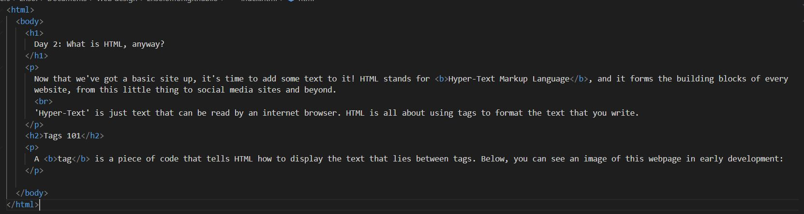

Day 2: What is HTML, anyway?
Now that we've got a basic site up, it's time to add some text to it! HTML stands for Hyper-Text Markup Language, and it forms the building blocks of every website, from this little thing to social media sites and beyond.
'Hyper-Text' is just text that can be read by an internet browser. HTML is all about using tags to format the text that you write.
Tags 101
A tag is a piece of code that tells HTML how to display the text that lies between tags. Below, you can see an image of this webpage in early development:

Here, you can see tags in action! The '<' and '>' characters mark where a tag starts and ends. Remember that a closing tag has a '/' in it as well!
What tags can you use?
Here's a list of all the tags I've used so far.
- html: Marks the start and end of the document. This tells the web browser you're reading the page on to treat this file as a HTML file, and not as any other type of file.
- body: Denotes where the main part of the document is located. Anything not inside the body won't show up on your webpage. Above the body is the head of the document, where non-visible information is located. We'll get back to that one much later.
- p: P stands for 'paragraph'! You can absolutely write text without a p tag, but putting your text in paragraphs makes it much easier to format later.
- h1, h2...: These are headings, which you use for titles. H1 is the biggest, and they can go all the way down to h6.
- ul and li: Ul stands for 'unordered list', and it's how you get bullet points. Li stands for 'list item', and you use it to mark each individual item inside the ul tag.
- img: This is how I got that image in up there ^! img is a complicated tag that I'll have a lot more to talk about in the future.
And that's everything for today! Next time: where did the last page go? And how can we view different versions of the website as it evolves? We'll have to look at a link...